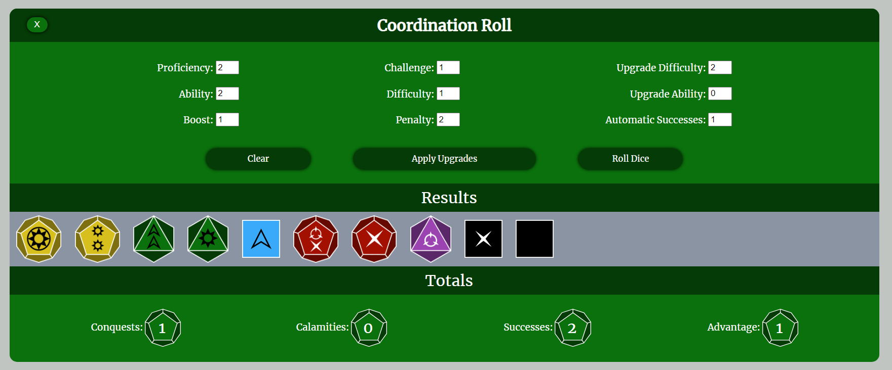
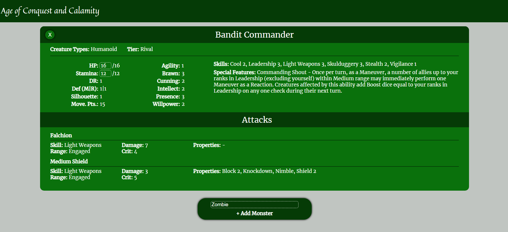
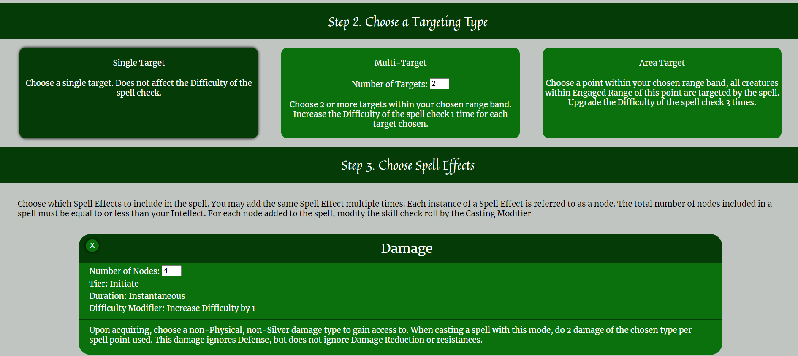

Jacob Davis
Age of Conquest and Calamity Website
I have been working with a group of friends for the past few years to create a game called Age of Conquest and Calamity. It is our own table top role playing game, similar to Dungeons and Dragons. This website provides players with several resources and a way to quickly and easily access all the information they will need when playing the game.
Live Website:
https://wickerprison.github.io/AoCaCWebsite/GitHub Page:
https://github.com/WickerPrison/AoCaCWebsiteThis website was built with JavaScript, CSS, HTML, and the Google Sheets API.
This is a solo project.
Google Sheets API
The game designers use Google Sheets when designing new rules and features in the game, so I used the Google Sheets API to pull data directly from a Google Sheets page. This allows the game designers to update or add monsters, weapons, and many other things easily and instantaneously.
Dice Roller
This game has a complex dice system featuring unique dice that are hard to find. This website has a built in dice roller to simplify the user experience.
Encounter Builder
The most complex part of this game is being the Game Master (GM) and controlling many monsters simultaneously that each have abilities and stats that need to be tracked. The Encounter Builder allows a GM to add monsters to an encounter, track the hit points and stamina of each monster, and make rolls for the monster simply by clicking on the name of the skill or weapon the creature is using.
Spell Builder
Players who choose to play as a wizard must build a custom spell each time they use their magical abilities. This system can be complicated for new players. The Spell Builder page walks users through casting a spell, letting them choose whatever options they want. At the end it tells them exactly what dice to roll to cast the spell and can roll the dice for them if they want.
